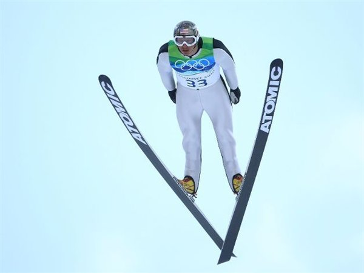
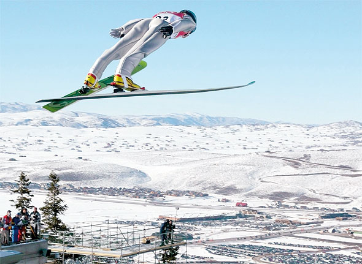
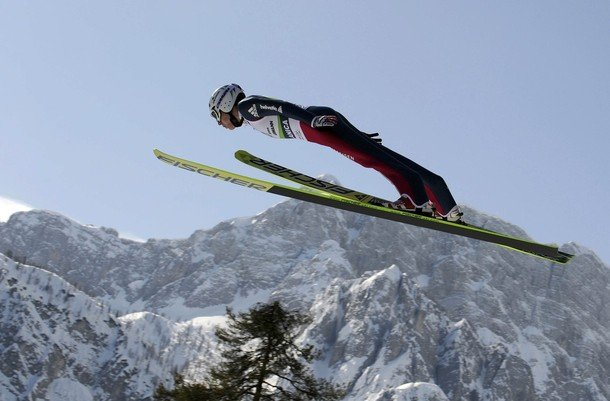
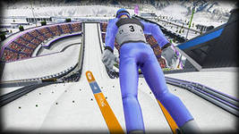
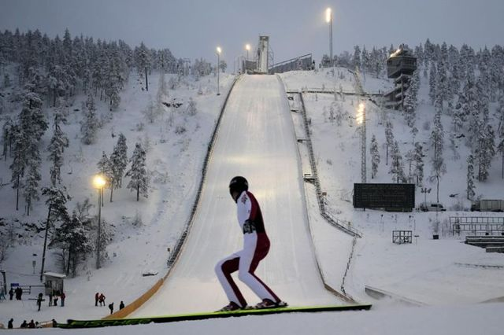

Прыжки на лыжах с трамплина
Одновременно простой, зрелищный и опасный спорт, входящий в программу зимних Олимпийских игр.
Придуман теми и посвящен тем, кто всегда мечтал парить в небе, как птица.
Вот только полёт в данном случае длится от 5 до 15 секунд. А происходит всё так. На определенной высоте на горной местности строится специальный стол отрыва, который, по сути, и является трамплином. Это место, где летающие лыжники набирают скорость для полёта. Под столом отрыва находится гора приземления, куда после прыжка спортсмен должен приземлиться. Сами соревнования проходят в следующем формате. Спортсмены из разных стран по очереди делают по одному прыжку, после чего согласно количеству набранных баллов за дальность прыжка и выполнение необходимых технических элементов, отсеиваются 30 лучших, которые совершают вторую попытку. Баллы за две попытки суммируются, и тот, кто наберет большее количество очков, признается победителем соревнований.
Выполнение технических элементов оценивается пятью судьями. Они смотрят на качество момента прыжка со стола отрыва, технику полётной фазы и приземление. В фазе полёта прыгун должен развести ноги таким образом, чтобы лыжи образовали латинскую букву V. Это делается для усложнения самого полета, а также для улучшения аэродинамики. В фазе приземления ноги спортсмена должны принять специальное положение, называемое «разножкой» или «телемарком». При этом положении одна из ног выставлена вперёд, а другая отведена назад; обе ноги согнуты в коленях; колено «задней» ноги опущено вниз; руки расставлены выше плеч. Лыжи во время приземления параллельны и максимально сближены. Выполнение «телемарка» оценивается судьями особенно строго и чаще всего спортсмены не добирают необходимого количества баллов из-за некачественного исполнения этого технического элемента.
Помимо баллов за технику, спортсмен получает дополнительные очки за дальность прыжка. Каждый трамплин в зависимости от размеров имеет свою критическую точку приземления именуемой К-поинтом. На Олимпийских играх обычно используются стандартные трамплины, где К-поинт расположен на уровне 90 и 120 метров соответственно. За приземление в критической точке спортсмен получает стандартное количество баллов - 60. Эта цифра может быть увеличена или уменьшена благодаря бонусам и штрафам. Они высчитываются исходя из трех факторов: приземления ближе или дальше К-поинта, точки отталкивания со стола отрыва, а также направления и силы ветра.
Ветер является отдельным участником соревнований по прыжкам с трамплина, так называемым X-фактором. Скорость и направление ветра могут существенно повлиять на качество прыжка. Идеальным для спортсмена является встречный ветер, благодаря которому прыгун в фазе полета может использовать порывы ветра, как на воздушную подушку, которая понесёт его на большую дальность. Но такое происходит далеко не всегда. Поскольку соревнования происходят в горной местности, направление и сила ветра может постоянно меняться, из-за чего не раз происходили случаи, когда участники из-за сильных порывов срывали прыжки, а то и вовсе падали и разбивались. В случае нестабильности скорости и направления ветра, организаторы соревнований могут отменить вторую попытку и выявлять победителя по результатам первой.
Прыжки на лыжах с трамплина на олимпийских играх проводятся в индивидуальном зачете, командном, где в одном коллективе прыжки совершают четыре спортсмена из одной страны. Победитель выявляется согласно сумме баллов всех четырех участников команды.
{kind=link}
{kind=link}
{kind=link}
{kind=link}
{kind=link}